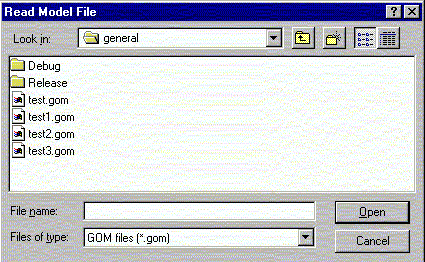

**************************************************************************
Import model file widget
Leif Laaksonen CSC 1996
**************************************************************************
Read in a previously saved model (gom) file.
The file is an ascii readable file containing information about the display at the time when the file was saved. Currently it will contain information about the atoms, rotation matrix, contour data ...
Currently there are still things which will not be saved but eventually all the information will be saved to continue a session from the previously saved stage.
Read in the gom file using the following widget:

Line command option: see mopen command
**************************************************************************
LUL/1997
**************************************************************************